全部主題
Meta is “re-evaluating” 2030 sustainability goals. Will others follow?
Claude開發商Anthropic周四（11/19）正式在美國那斯達克（Nasdaq）掛牌，成為全球首家上市的前沿AI公司。Anthropic的股票代號為ANT，發行價為每股83美元，開盤即衝上111.5美元，最後以97.17美元作收，上漲17%，市值約1.27兆美元。 此次Anthropic IPO總計發售9.8億股，每股83美元，發售規模約813億美元，創下全球首次公開發行股票（IPO）規模紀錄。
Amid allegations of multiple affairs, including with a direct report and an alleged Chinese intelligence asset, sources tell WIRED the Nvidia board’s main issue was the former CEO’s “lack of candor.”
The messaging app similarly limited screenshots because of Microsoft Recall last year.
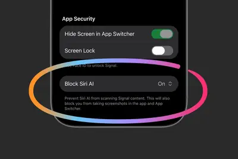
Anthropic mathematician Levent Alpöge claims he has proved the Riemann hypothesis, one of mathematics's most notoriously difficult problems, with the help of Claude, cracking a puzzle that has eluded some of the world's best mathematicians for decades. If verified, it would mark
The Jensen Huang scandal is the latest fuel for dating anxieties among newly rich and powerful tech workers.
Gemini 現在可以直接操作應用程式介面，例如點擊按鈕、切換選單及輸入資料，進一步執行需要跨越不同軟體與網站的工作。
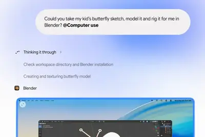
IT之家 11 月 20 日消息，据《科学美国人》报道，当地时间 20 日，Anthropic 数学家莱文特 · 阿尔波格宣称，自己与 AI 模型 Claude 合作，攻克了数学界最著名的难题之一 —— 黎曼猜想。 阿尔波格在个人网站发表声明称：“我相信， 我与 Claude 合作找到了黎曼猜想的证明 。” IT之家注：黎曼猜想由德国数学家伯恩哈德 · 黎曼于 1859 年提出，认为看似随机分布在数轴上的质数，实际上遵循着复杂而有意义的规律。 此后，黎曼猜想成为整个数论研究领域的重要指引，也是数学界 最著名的未解难题 。由于长期缺乏明确的证明思路，研究进
IT之家 11 月 21 日消息，当地时间 11 月 20 日，阿波罗全球管理公司与高盛宣布，已完成约 440 亿美元 （IT之家注：现汇率约合 2,944.47 亿元人民币） 优先及次级票据融资定价， 资金将用于为 SpaceX 购买 GPU 及相关设备 。该交易因投资者需求强劲而获得超额认购并扩大规模，成为迄今规模最大的 GPU 融资交易。 阿波罗与高盛共同牵头此次融资，参与方还包括贝莱德、高盛资产管理及 KKR。融资将用于采购下一代英伟达 Vera Rubin 芯片，以支持 SpaceX 在地面建设计算基础设施。 相关 GPU 及设备预计于 202
IT之家 11 月 21 日消息，型号“SM-S957B”的三星手机昨日（11 月 20 日）现身 GeekBench 跑分库， 7.1.0 版本单核成绩为 3,061 分，多核成绩为 10,967 分，相关线索表明该机上市后为三星 Galaxy S27 Pro。 IT之家注：根据 GSMA IMEI 数据库此前公示的信息，SM-S957B 对应三星 Galaxy S27 Pro，且后缀“B”代表国际市场版本，覆盖欧洲、印度等市场。 根据跑分页面显示，国际版 Galaxy S27 Pro 手机芯片代号为 S5E9975，对应三星自家的 Exynos 27
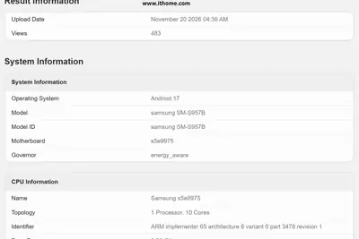
IT之家 11 月 21 日消息，首款为 AI 而生的鸿蒙手机 —— 华为星芒 OSTA O1 Pro 已于昨日下午正式发布 ， 首发价 5499 元起、叠加国补后 4999 元起 。 ▲ IT之家开箱：华为全新子品牌星芒 OSTA O1 Pro 手机实拍 IT之家注意到，华为星芒品牌总经理刘赫已开通微博，并在 00:10 发文汇报了品牌开山之作 —— OSTA O1 Pro 新机的首销进展： 截止目前为止， 最受欢迎的 16G 版本已经在全平台售罄 ，远超我们预期！12G 版本也在各个平台持续热销中， 仅部分门店和平台合作伙伴有现货 ，目前我们正在全力
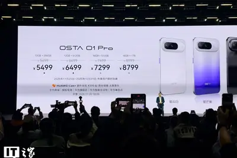
The blockbuster game makes no secret of its contempt for law enforcement. Real police departments using it to recruit new members and scold the public apparently didn’t get the memo.
IT之家 11 月 21 日消息，Contra Labs 于当地时间 11 月 18 日发布 AI 设计能力评测榜单 Frontier Design Benchmark。 其中，一款代号为 Gestalt、目前处于隐身开发状态（Stealth）的匿名 AI 模型成为最大黑马，在专业设计师盲测中以明显优势登顶，超过 Anthropic 的 Claude Fable 5.2、OpenAI 的 GPT-6.1 Sol 等主流模型，甚至在设计师偏好评分中超过了人类设计师的参考作品。 根据 Contra Labs 官方公布的评测结果，Gestalt 的 Elo 评
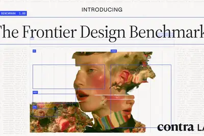
IT之家 11 月 21 日消息，OpenAI 今日宣布向 ChatGPT Plus 订阅用户开放 Spaces 协作空间功能。 该功能此前仅面向 Pro、Business 和 Enterprise 等付费方案用户提供，现在每月支付 20 美元 （IT之家注：现汇率约合 133.8 元人民币） 的 Plus 用户也可以创建自己的空间，与其他用户共同整理资料、协作处理文档和文件。 ChatGPT Spaces 最早于 2026 年 9 月的 OpenAI Dev Day 活动上推出，定位为多人协作工作空间。用户可以邀请同事或朋友加入，共享信息、文档及其他文
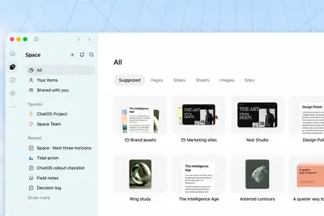
IT之家 11 月 21 日消息，谷歌搜索产品副总裁罗比 · 斯坦（Robby Stein）昨日（11 月 20 日）在 X 平台发布推文，宣布 Google Search 首页将迎来新一轮调整， 面向全球桌面端逐步推出可折叠侧边栏，让用户直接从首页查找和继续此前的 AI 搜索对话。 根据演示，用户点击页面左侧的灰色条，即可展开侧边栏，查看通过“AI 模式”（AI Mode）进行的搜索记录。面板还提供新建对话、搜索历史对话以及连接 Gemini 笔记本等入口。选择已有记录后，用户可以回到相应话题继续提问，不必重新从头搜索。 斯坦指出本次改进的重点是让搜索
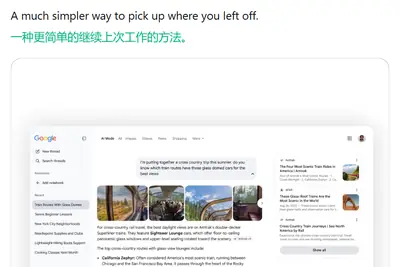
Google search is making it even easier to access AI tools on the search page.
Test using prompts with unique, trackable secrets proves that data doesn't stay private.
Spotify founder Daniel Ek is backing Europa Fusion, a fusion power startup founded by an AI researcher. Here's what the startup is building.
Mathematicians are having their minds blown by the latest AI-driven result — and there's a competing human solution, too.
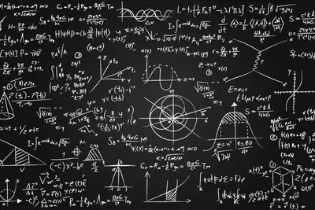
Article URL: https://ankitg.me/blog/vibecoding-inference-chip/ Comments URL: https://news.ycombinator.com/item?id=50579297 Points: 100 # Comments: 33
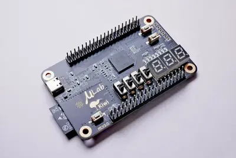
A new report from the AI evaluation nonprofit METR finds that some AI capabilities are continuing to improve along an exponential trajectory—but it also indicates that models aren’t quite as good at tasks that require judgment as they are at coding. The report is an update to the
IT之家 11 月 20 日消息，据路透社当地时间 18 日报道，三星电子两位高管在本周举行的摩根士丹利会议上表示 Neocloud（新兴 AI 云服务企业）面临的不确定性对整体市场的影响有限，这轮 AI 投资基于实际需求而非投机。 三星 DS（设备解决方案，半导体板块）部门经营战略总管负责人 Kim Yong-kwan 表示，Neocloud 的“市占份额”仅约为 8%， 对此类企业的担忧不会对 AI 整体发展轨迹构成重大威胁 。这位高管并未详述作为市占计算基础的“市场”具体指什么。 三星晶圆代工销售营销主管 Kang Suk-chae 则认为，当前的
There was a dayslong Outlook outage. A nationwide ground stop for only the second time in 25 years. Banks seemed to suddenly stop working. Even iCloud couldn't stay up and running. This week, it felt like the technological world simply collapsed. And it felt like this might be th
IT之家 11 月 20 日消息，据路透社报道，当地时间 20 日，Anthropic 上市次日股价下跌，令低迷的 AI 板块雪上加霜。这场备受期待的 IPO，也没能重新点燃投资者的热情。 作为 AI 投资热潮的重要风向标，Anthropic 上市曾被寄予厚望，市场期待借此提振经历一段动荡时期后持续疲软的 AI 板块。 然而，Anthropic 股价报 88.25 美元 （IT之家注：现汇率约合 590.6 元人民币） ， 较上市首日的收盘价下跌约 9% 。公司完全稀释后的估值约为 1.6 万亿美元 （现汇率约合 10.71 万亿元人民币） ，按已发行股
From notetakers to webcams, here are six AI-powered gadgets to upgrade your workspace.
Meta’s AI assistant can track and unfollow Instagram users who don’t follow you back—and some people are taking full advantage.
IT之家 11 月 20 日消息，日本开发者 kociden 近日在 GitHub 上公开了一款名为「sakurai-skill」的非官方项目，将知名游戏制作人樱井政博 YouTube 频道《樱井政博的游戏制作》（桜井政博のゲーム作るには）全 257 集正片及特别合作视频的字幕内容，整理为 AI 智能体 Skill 技能文件，用于辅助开发。 公开信息显示，《樱井政博的游戏制作》是《星之卡比》和《任天堂明星大乱斗》系列制作人樱井政博开设的 YouTube 频道，于 2024 年 10 月 22 日结束更新。频道主要分享樱井政博多年积累的游戏开发经验与设计理
IT之家 11 月 20 日消息，影石官方宣布，即日起，影石 Insta360 旗下旗舰级无线麦克风 Mic Pro 与 AI 录音全向麦克风 Wave 完成免费固件升级，原生接入腾讯 WorkBuddy。 升级后，Mic Pro 的录音可 直接进入 AI 工作流 ，影石的音频产品也从「记录工具」延伸为 AI 办公的语音入口。 影石方面称，Mic Pro 和 Wave 凭借专业拾音与 AI 降噪能力，帮助用户清晰捕捉真实工作场景中的声音。WorkBuddy 则 进一步理解录音内容，调用 AI Agent 完成信息整理与任务处理 。AI 不再局限于电脑中的
IT之家 11 月 20 日消息，工商信息显示，DeepSeek 运营主体杭州深度求索人工智能基础技术研究有限公司近日完成工商变更，新增股东杭州程砚企业管理咨询合伙企业（有限合伙）。 IT之家查询国家企业信用信息公示系统获悉，杭州深度求索注册资本由 1644.7496 万元增至 1991.8707 万元，增加 347.1211 万元，增幅约 21.1%。 据证券时报援引知情交易人士消息， DeepSeek 本轮融资募资规模区间在 1000 亿元至 1055 亿元 ，投后估值约 6155 亿元。叠加 2026 年 6 月首轮约 510 亿元融资，市场测算其
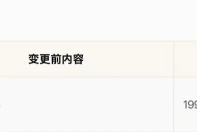
IT之家 11 月 20 日消息，当地时间 19 日，据彭博社报道，超过 500 名谷歌员工和合同工联名请愿，要求公司允许中小学继续使用不含 AI 功能的谷歌搜索。 请愿书致谷歌 CEO 桑达尔 · 皮查伊、搜索业务负责人伊丽莎白 · 里德和教育业务负责人克里斯 · 菲利普斯。活动由 Alphabet 员工工会发起，其代表着 Alphabet 及旗下谷歌、YouTube 等公司的全职员工、临时工、供应商人员和合同工。 员工在请愿书中警告：如果学校不愿使用 AI，就不让它们使用谷歌搜索， 只会让谷歌更难说服用户 ，学校甚至可能因此彻底弃用谷歌产品。 此前，
AI 大廠 Anthropic 掛牌首日股價勁揚逾 17%，不過，並未消除市場對 AI 前景的疑慮，台股今天多 […]
Uber 近日在工程部落格公開 AI 程式碼清理系統 AutoClean，能自動找出已全面上線、卻仍殘留在程式碼中的過期功能開關（feature flag），並產出經過測試、可供人工審查的程式碼差異（diff）。Uber 表示，AutoClean 過去幾年已清理超過 1.6 萬個功能開關、逾 100 萬行程式碼。這套系統並非讓 AI 代理（AI agent）包辦一切，而是讓代理與傳統程式碼轉換工具分工，再以持續整合（continuous integration，CI）、靜態檢查與多個審查代理層層把關，最後交由負責團隊的工程師做最終決定。 功能開關是讓工程
IT之家 11 月 20 日消息，小米 MiMo 官方文档显示，11 月 19 日起， Token Plan 限时支持 UltraSpeed 超高速旗舰推理模型 。 Token Plan 的 Pro / Max 套餐现已限时开放和支持 MiMo-V2.6-Pro-UltraSpeed 超高速推理模型，兼具旗舰级智能与更快的响应速度，模型调用更高效、交互体验更流畅。 据介绍，MiMo-V2.6-Pro-UltraSpeed 兼顾 V2.6-Pro 性能， 提供最高 20 倍输出速度 ；适合量化交易、实时风控、科学研究、实时编程辅助等场景。 IT之家附小米
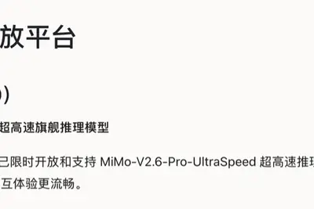
OpenAI’s layered approach to adversarial distillation combines model training, safeguards, detection, and enforcement to protect against capability extraction.
macOS 版 Gemini 將具備電腦使用（computer use）能力，意味著它能協助使用者「橫跨你的地 […]
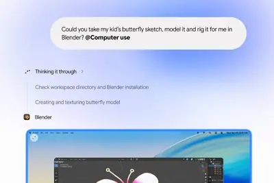
微軟發布程式碼編輯器Visual Studio Code（VS Code）1.147穩定版，擴充AI代理的瀏覽器操作與工作排程功能。新版允許代理操作外部Chrome或Edge瀏覽器，並將工作請求安排在指定時間送出，也新增依照任務類型自動選擇AI模型的功能。
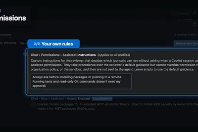
人工智慧（AI）需求續強，經濟部今天公布 10 月外銷訂單為 1,238.2 億美元，創歷年單月新高，年增 7 […]
日本東京股市今天重挫，日經平均指數終場大跌 3,007.56 點，收在 56,436.65 點。儘管備受全球投 […]
OpenAI 近期為 ChatGPT 迎來重大更新，正式推出名為「Live Dictation」（即時語音輸入 […]
美國眾議院委員會揭露，商務部已核准大量AI晶片對中出口許可，買家含軍方關聯企業。此舉引發國安疑慮，國會正加強監督輝達與超微等公司的出口審批，並要求收緊現行管制政策。